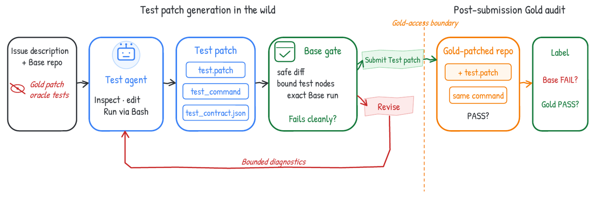
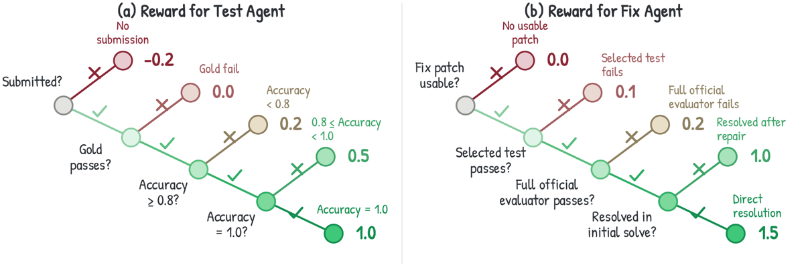
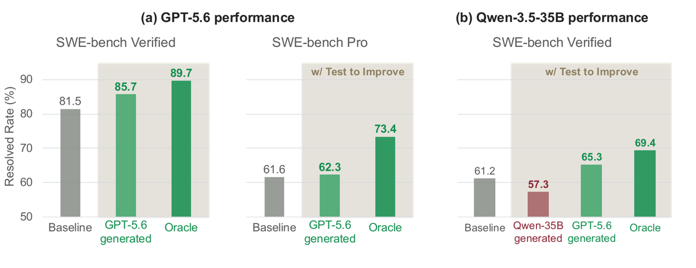

Deux rôles entraînés séparément sur le même backbone — un Test agent qui écrit un test de régression repository-native, un harness fail-closed qui le qualifie puis le gèle, un Repair agent qui ne modifie que la source à partir du feedback d'exécution — avec un RL par rôle (SFT off-policy puis GRPO) ; l'évaluateur officiel SWE-bench reste seul juge final.
Claim principal, précisément : à politique de réparation fixée, le feedback de tests auto-générés n'est pas monotone — les tests du Qwen non entraîné font baisser le resolved rate de 61,2 % à 57,3 % sur SWE-bench Verified, ceux de GPT-5.6-sol le font monter à 65,3 % [§5.2.1, Tab. 2, Fig. 5b] ; l'entraînement par rôle porte le Base-to-Gold du Test agent de 22,2 % à 62,2 % [Tab. 1] et la composition des deux agents entraînés atteint 72,6 %, soit +11,4 pt sur la baseline no-test d'origine, sans modèle plus fort ni oracle à l'évaluation [Tab. 2].
⚠️ Le +11,4 est composite (+7,1 d'entraînement Repair, +4,3 de feedback) et non apparié en compute — les auteurs l'écrivent eux-mêmes en intro : « The composed gain reflects the full system, including additional test-generation and revision computation, rather than a compute-matched improvement » [§1].
(a) Génération de test (gentest) — observation : l'issue publique {{task}} + un checkout buggy dans /testbed, package déjà installé. Gold, patch de référence et tests officiels hors contexte [App. B.3.1].
Espace d'actions : un seul outil bash standard — « all inspection, editing, testing, and submission use it » [Lst. 1]. Pas de signature d'outil structurée. Les actions de protocole passent par des commandes sentinelles :
- echo COMPLETE_TASK_AND_SUBMIT_FINAL_OUTPUT && cat /tmp/test.patch (soumission du bundle)
- écriture de /tmp/test_contract.json et d'une seule ligne dans /tmp/test_command
- cd /testbed && git add -AN && git diff --no-color > /tmp/test.patch
Frontière Gold-free explicite dans le prompt [Lst. 2] : interdiction d'inspecter git log/show/branch/cat-file, refs, tags, remotes, .git ; seuls git status, git add -AN et un git diff working-tree sont autorisés. ⚠️ C'est une contrainte de prompt, pas un sandbox read-only sur .git — le papier ne dit pas si elle est appliquée mécaniquement. Non précisé.
Bundle soumis b = (Δ_b, c_b, κ_b) [Tab. 10] :
| Artefact | Contenu | Rôle du harness |
|---|---|---|
test.patch |
diff unifié persisté sur des tests repository-native | lie le check à un changement de code auditable |
test_command |
sélecteur de nœud de test exact + invocation | permet de rejeter une commande visant une suite, un répertoire, une classe ou un fichier |
test_contract.json |
entrypoint public, trigger, expected_output, issue_evidence, alternative_hypotheses, non_assertions, test_nodes | métadonnée structurellement validée — « not an independent semantic judge » [App. B.1] |
Horizon : 60 tours max, 900 s, cost limit 5, ≤ 5 tentatives de soumission par épisode ; la première soumission valide qui échoue proprement sur Base est retenue [§3.1, Tab. 7c]. Contexte 48 000 tokens, réponse 8 192 [Tab. 7b].
(b) Test to Improve (repair) — observation du Repair agent : l'issue, les métadonnées du gate, le nom du fichier de test, la commande du runner, et une queue bornée de sortie d'exécution. La source du test reste cachée (test_source_visibility: hidden_verifier_only), même si « tracebacks can reveal paths and assertion lines » [App. B.3.2]. Enveloppe de feedback recopiée en §3.
Actions : bash, plus deux commandes sentinelles — COMPLETE_TASK_AND_CHECK_CANDIDATE_PATCH (teste le candidat contre le test gelé) et COMPLETE_TASK_AND_SUBMIT_FINAL_OUTPUT (soumission finale malgré un test rouge). Pas d'action « keep original » [App. B.3.2].
Horizon : Round 0 = 200 tours ; puis ≤ 5 rounds de révision × 40 tours [Tab. 8c, Tab. 9b]. 40 tours sans CHECK ⇒ CHECK forcé. Un pass valide termine immédiatement l'épisode et le contrôleur soumet, sans tour d'agent supplémentaire ; épuisement du budget ⇒ force-submit du dernier candidat [§3.2, App. B.1].
Invariant de patch : chaque p_t est le patch source cumulatif complet relatif à Base, pas un diff incrémental ; le vérifieur reset à R_B avant d'appliquer p_t + le bundle gelé, et ne chaîne jamais des patchs incrémentaux [App. B.1]. C'est un choix d'architecture important : la trajectoire reste un arbre d'évaluations indépendantes sur un état figé.
Exécution : sandbox indépendant par vérification, réseau désactivé pendant la génération de test, reset « before grade », manifeste d'exécution immuable m (commit, image, version du harness, reçu de reset) [Tab. 9, App. B.1]. Timeouts : test 240 s, install 600–1 200 s selon la phase.
Gestion des erreurs — le point le plus soigné du papier. r(b,R;m) ∈ {0,1} indique si les artefacts valident, si les patchs s'appliquent, si les nœuds déclarés bindent, et si l'exécution se termine sans erreur opérationnelle [Éq. 7]. Conditionnellement à r = 1 seulement, le harness rend un verdict z ∈ {PASS, FAIL}. Conséquences :
- une erreur d'infra ⇒ diagnostic borné, jamais un verdict ⇒ ne peut pas établir une acceptation locale ;
- hard_fail n'est un FAIL comportemental que si l'exécution est valide ;
- les diagnostics opérationnels n'accordent jamais de budget de révision supplémentaire ;
- un CHECK sur un candidat inchangé ne relance pas le gate et ne consomme pas de check [Lst. 11].
Sorties mal formées : message de réparation de format dédié côté Test (« Every response must contain at least one standard bash tool call ») [Lst. 3] ; branche d'erreur de format restée inactive dans les runs rapportés [§4.1]. Côté Repair, échec d'application du patch ⇒ message de recovery dédié, dépôt remis à Base, même budget d'épisode [Lst. 12].
Contexte long : pas de compaction ni de résumé. h_{t+1} « includes the Round-0 context and subsequent interaction through the current check; it is not replaced by the latest feedback alone » [§3.2]. ⚠️ Mais la conversion des conversations seeded « drops exit rows, reasoning items, and unpaired tool items » [App. B.3.2] : les tokens de raisonnement émis au Round 0 ne sont pas reconduits dans le contexte des rounds suivants. Effet sur le ratio d'importance : non discuté.
Exemple de trajectoire (App. A.5, Case 2, Sphinx #9230, recopié condensé) :
- Test agent (40 appels modèle) : test du parser pour :param dict(str, str) name:, attend name (dict(str, str)) -- blah blah ; commande persistée python -m pytest tests/test_domain_py.py::test_info_field_list_param_type_dict_str_str -q ; Base échoue en rendant str) name (dict(str,) ; Gold renvoie code 0.
- Patch Repair initial : édite le parser Napoleon, sans rapport ; le chemin fautif est dans sphinx/util/docfields.py. Feedback du test gelé : - name (dict(str, str)) -- blah blah / + str) name (dict(str,) -- blah blah / 1 failed.
- Révision (2 rounds, 75 tours) : argtype, argname = _split_type_and_name(fieldarg) conservant tous les tokens avant le dernier nom de paramètre. Test gelé ✓, évaluateur officiel resolved=true (44 P2P passent). ⚠️ Le patch terminal conserve l'édition Napoleon inutile — « successful but nonminimal », les auteurs le notent.
Exécution de tests, deux niveaux, aucun LLM-as-judge nulle part. Le test_contract.json est explicitement « structurally validated metadata, not an independent semantic judge » [App. B.1].
Reward Test agent [Éq. 5, §4.1, Fig. 4a] — B_x(b) = échec propre sur Base, G_x(b) = passage sur Gold, Q_x(b) = B_x·G_x (Base-to-Gold) ; discrimination sur ≤ 8 candidate patches dédupliqués labellisés par l'évaluateur officiel V*, avec TPR = fraction de candidates corrects qui passent, TNR = fraction d'incorrects qui échouent, BA = ½(TPR+TNR) :
r_T(b) = -0.2 si rollout complété sans soumission valide
0.0 si B_x(b)=0 ou G_x(b)=0
0.2 si Q_x=1 et BA < 0.8
0.5 si Q_x=1 et 0.8 ≤ BA < 1
1.0 si Q_x=1 et BA = 1
Q_x = 1 est une clause d'échec — sans Base-fail et Gold-pass, la BA ne compte pour rien. Au-dessus, trois paliers de crédit partiel, pas de reward continu.BA ≤ 0,5 [§4.1].Reward Repair agent [Éq. 6, §4.2, Fig. 4b, Tab. 8d] :
r_R(p_t) = 0 patch terminal invalide / manquant / modification de test interdite
0.1 test d'entraînement sélectionné FAIL (quel que soit l'officiel)
0.2 test sélectionné PASS, officiel FAIL
1.0 les deux PASS, après révision (t > 0)
1.5 les deux PASS, au Round 0 (t = 0)
A_R(τ) = 0, override final de l'advantage après centrage/normalisation de groupe, pas un remplacement du reward brut par 0, et pas le 0,1 d'échec [App. A.2]. Distinction rare et correcte.Base-to-Gold (Q_x), une seule fois par issue et par modèle, sur SWE-bench Verified : Qwen base 22,2 % → +SFT 39,6 % → +RL 62,2 % ; Codex-5.3 61,0 % ; DeepSeek-V4-Flash 73,4 % ; GPT-5.6-sol 87,8 % [Tab. 1].TPR et TNR sont définis, calculés et utilisés dans le reward [§4.1], mais aucune valeur de TPR, de TNR ou de BA n'apparaît dans aucun tableau ni aucune figure du papier, ni à la fin ni en cours d'entraînement. Seule l'agrégation BA entre dans le reward, et seule Q_x est publiée. ⇒ Le taux de faux positifs du vérifieur (patch incorrect accepté) est inconnu. C'est le chiffre qui déciderait de tout.Q, ni TPR, ni TNR. Fig. 6a donne Q par taille de SFT (0/1K/3K/5K/10K) + un seul point post-RL. ⇒ la fiabilité du vérifieur sous pression d'optimisation n'est mesurée qu'aux extrémités, et sur un agrégat.r = 0 ⇒ ni pass ni fail), et un patch vide au Round 0 doit reproduire l'échec Base — un pass sur patch vide « indicates inconsistent execution evidence rather than a reason to bypass Base qualification » [App. B.3.2]. Limite avouée : « artifact validity, declared-node binding, and a clean Base failure do not by themselves prove that the test is semantically aligned with the issue » [§3.1].Système Test (verbatim, Lst. 1) :
You are an experienced repository maintainer writing one precise regression test for the issue. Correctly identify the smallest public behavior contract before treating a Base failure as useful. You have one standard bash tool; all inspection, editing, testing, and submission use it.
Contrat de qualité de test (Lst. 2, verbatim condensé) — c'est la rubrique du papier :
- Exercise a public API, CLI, rendered output, migration operation, or established repository workflow. Do not assert private/internal state merely because it is easy to inspect. […]
- Assert the CORRECTED behavior, never the buggy symptom. Pin an exact value, message, count, or ordering only when the issue, docs, or an existing public test explicitly fixes that literal. Otherwise use the weakest observable property that the issue guarantees and buggy Base violates.
- Add one coherent regression-test group for this behavior. […] Do not add unrelated coverage.
- The one-line command in /tmp/test_command must explicitly select every test node declared for this behavior. A file-, class-, directory-, or suite-level command is rejected even if it fails.
Et, dans le même prompt : « A clean Base failure is necessary but not sufficient: it proves only that the buggy checkout disagrees with your assertion, not that the assertion is the behavior required by the issue. […] Consider at least one plausible alternative interpretation of the issue. »
Champs obligatoires du contrat : entrypoint, trigger, expected_output, issue_evidence (liste non vide), alternative_hypotheses (interprétations rejetées), non_assertions (littéraux volontairement non figés), test_nodes.
Enveloppe de feedback Repair (Lst. 7, ordre des champs) : gate_status ∈ {pass, hard_fail, inconclusive}, gate_reason, passed, n_tests, failed_test_names, puis par test blocked_by_harness, command_sanitized, counts, failure_kind, inconclusive_infra, rc, removed_command_flags, timeout_detected, puis <raw_test_output_tail>. Cap : 6 000 caractères de feedback, 12 000 pour les diagnostics d'application de patch.
Prompt Repair, clause anti-veto (Lst. 6, verbatim) :
A valid behavioral failure is useful evidence, but the generated test may be incomplete, over-specific, or wrong. An operational error is not evidence that the source patch violates the test requirement. Judge valid test feedback together with the original issue, repository behavior, and checks you can run in the repository workspace.
| Test agent | Repair agent | |
|---|---|---|
| Init | checkpoint SFT (5K traj.) | Qwen-3.5-35B-A3B |
| Optimiseur | Adam, β₁ 0,9 / β₂ 0,98, wd 0,1 | idem |
| LR / schedule | 1e-6 / constant | 1e-6 / cosine |
| KL | coef. 0 (pas de référence) | coef. 0 |
| Clip bas / haut | 0,2 / 0,28 | 0,2 / 0,28 |
| Advantage | soustraction de la moyenne de groupe activée, division par l'écart-type désactivée | idem |
| Loss reduction | non précisé | per-token |
| Groupe | 16 issues × 8 samples = 128 rollouts/itération | idem |
| Batch global | 32 | 64 |
| Température / top-p / top-k (RL) | 1,0 / 1,0 / −1 | 1,0 / 1,0 / −1 |
| Contexte / réponse max | 48 000 / 8 192 | 65 536 / 6 122 |
| Steps (checkpoint rapporté) | 200 (horizon 200) | 100 (horizon lanceur 300) |
| Budget d'épisode | 60 tours, 900 s, cost limit 5 | 200 tours Round 0 + 5 × 40 |
Température d'évaluation du Repair : 0,6, 3 rollouts par issue/source, 128 workers [Tab. 9b]. Génération de test en éval : 1 run par issue/source, 60 tours, 32 workers [Tab. 9a].
- ⚠️ KL = 0 et division par σ désactivée et clip haut élargi à 0,28 : trois choix qui, ensemble, poussent vers l'exploration et contre l'effondrement d'entropie, mais retirent tout ancrage à une référence. Aucune mesure d'entropie ni de divergence n'est rapportée.
- Stabilité : un seul problème documenté, et il est important — RL depuis le backbone brut ne décolle pas. « In the reported runs, reward remains low and oscillatory from Base but rises steadily from the SFT checkpoint » [§5.2.2, Fig. 6b]. Explication des auteurs, cohérente avec la structure du reward : une politique Base produit surtout des soumissions invalides ou des issues à reward homogène nul ⇒ peu d'advantage intra-groupe pour GRPO. Autres astuces : masquage des rollouts avortés (Mask aborted rollouts: Enabled), filtrage des groupes à variance nulle (Zero-variance group filtering: Enabled) [Tab. 8b]. Rien d'« essayé puis abandonné » n'est rapporté.
- Compute : 1 nœud, 8 GPU par rôle ; TP 2, CP 4, PP 1, EP 4 (ETP 1 côté Repair) ; 32 768 tokens/GPU max (Test) et 16 384 (Repair) ; backend rollout SGLang, concurrence 512 (Test) / 64 (Repair), static memory fraction 0,7 [Tab. 7e, Tab. 8b-c]. GPU-heures et durée : non précisés. Type de GPU : non précisé.
- Dynamique : Fig. 6b (reward Test, Base vs SFT init) et Fig. 6c (reward Repair, « overall increase »). Les auteurs bornent eux-mêmes la lecture : « this trend does not itself establish improved held-out resolution » [§5.2.3]. Aucune courbe de longueur de réponse, aucune courbe d'entropie, aucune courbe de Base-to-Gold par step.
Cas 1 — Le feedback d'un mauvais testeur dégrade la réparation. Comportement : avec les tests du Qwen non entraîné, le resolved rate passe de 61,2 % à 57,3 % (Base Repair) et de 68,3 % à 64,6 % (Trained Repair) [Tab. 2]. Détection : condition expérimentale dédiée, politique Repair tenue fixe, source du test seule variable. Correction : entraîner le Test agent (62,2 % de B2G ⇒ 64,1 % / 72,6 %). La correction est évaluée — c'est le résultat principal. ⚠️ Mais le mécanisme n'est pas décomposé : on ne sait pas quelle part vient (i) d'un test faible qui passe sur un patch faux et termine immédiatement l'épisode (règle de stop du contrôleur, §3.2) vs (ii) d'un test faux qui reste rouge et détourne la révision d'un patch initialement correct, puis force-submit. Aucun décompte d'instances « correctes au Round 0, cassées après révision ».
Cas 2 — Tests sur-spécifiés / sur l'état interne. Détection : a priori, par le prompt (contrat de qualité, §3) — « Do not assert private/internal state merely because it is easy to inspect », « use the weakest observable property », liste non_assertions obligatoire. Correction : préventive, non évaluée — aucune mesure de la fréquence de sur-spécification avant/après.
Cas 3 — Commande de test trop large. Un test qui échoue pour une raison quelconque au niveau fichier/classe/suite serait un faux signal d'échec Base. Détection : le harness rejette toute commande qui ne sélectionne pas explicitement chaque nœud déclaré, « even if it fails » [Lst. 2, Tab. 10]. Correction structurelle. Taux de rejet : non rapporté.
Cas 4 — Exploitation des erreurs d'infrastructure. Une erreur d'env pourrait être lue comme un rejet correct (côté Test) ou comme un pass (côté Repair). Correction : fail-closed, r = 0 ⇒ aucun verdict, advantage nul, pas de budget supplémentaire [App. A.2, B.1]. ✅ Préventif et explicite. Fréquence des inconclusive : non rapportée.
Cas 5 — Affaiblir le check au lieu de réparer la source. Correction : patchs source-only, modification de test ⇒ reward 0, export cumulatif relatif à Base, bundle gelé sur tous les rounds. Taux de tentatives de modification de test : non rapporté.
Cas 6 — Patch terminal non minimal. Observé qualitativement : Sphinx #9230, le patch gagnant conserve une édition Napoleon sans rapport [App. A.5, Case 2]. Détection : inspection manuelle de 2 trajectoires. Correction : aucune. ⚠️ Le reward ne pénalise pas la non-minimalité — seule la suite P2P officielle l'attrape, et seulement si la modification casse quelque chose.
Cas 7 — Audit Gold lui-même bruité. Django #16901 : le corps du test passe sur Gold mais « a later wrapper cleanup command returned code 1 after a git checkout pathspec error » [App. A.5, Case 1] ⇒ l'audit Base-to-Gold est compté comme non propre. ⚠️ Donc le 62,2 % de B2G est une borne inférieure bruitée par l'infra, d'un montant non quantifié.
Cas 8 — Co-adaptation Test↔Repair. Jamais observé, car structurellement empêché : les deux politiques sont entraînées séparément et composées seulement à l'évaluation, le reward du Test ne dépend jamais de la sortie du Repair, et le reward du Repair est ancré sur V*. Les auteurs nomment le risque pour le futur travail joint : « prevent degenerate coordination in which the Test and Repair roles adapt to each other rather than to the task specification » [§7, Limitations]. Non mesuré, par construction.
⚠️ Ce que le papier ne mentionne pas et qui est crédible vu le reward : (i) le palier 0,2 (« test local passe, officiel échoue ») récompense positivement un patch plausible mais faux — sa fréquence au fil de l'entraînement n'est pas suivie ; (ii) la pénalité de longueur « > 8 tours au-dessus du plus court du groupe ⇒ reward / 2 » crée une pression vers des tests moins explorés, donc potentiellement moins couvrants, exactement l'axe que BA est censé protéger — interaction non étudiée.
Install timeout: 1 200 s côté génération vs Test timeout: 240 s : la mise en place de l'environnement dépôt domine l'exécution du test. Aucun débit (rollouts/h) rapporté.| Chiffre annoncé | Où il est annoncé | Source dans le papier | Verdict |
|---|---|---|---|
| no-test baseline 61,2 % → 57,3 % avec les tests du Test agent de base | abstract + §1 | Tab. 2, ligne Base-35B / colonne Base Repair : 57,3 (Δ −3,9) ; Fig. 5b | confirmé |
| → 65,3 % avec les tests de GPT-5.6-sol | abstract + §1 | Tab. 2, ligne GPT-5.6-sol / Base Repair : 65,3 (+4,1) ; Fig. 5b | confirmé |
| Base-to-Gold du Test agent Qwen 22,2 % → 62,2 % | abstract + §1 | Tab. 1 (22,2 → SFT 39,6 → RL 62,2) | confirmé — un seul run de génération par issue (légende Tab. 1) |
| composition des deux agents post-entraînés = 72,6 % | abstract + §1 + §5.2.3 | Tab. 2, ligne RL-35B / Trained Repair : 72,6 | confirmé |
| « 11,4-point gain over the original no-test baseline » | abstract + §1 + §5.2.3 | 72,6 − 61,2 = 11,4 (Tab. 2) | confirmé mais composite : +7,1 vient de l'entraînement Repair (61,2 → 68,3), +4,3 du feedback ; et non apparié en compute, les auteurs l'écrivent en §1 |
| « without stronger-model or Oracle feedback at evaluation time » | abstract | Tab. 9 : l'éval compose Test RL-35B + Repair entraîné, les lignes Oracle sont des conditions de référence séparées | confirmé — ⚠️ mais le Repair a été entraîné avec feedback Oracle F2P (Tab. 8c) ; l'oracle est absent à l'éval, pas à l'entraînement |
| Repair training : Round-0 61,2 % → 68,3 % (+7,1) | §1, §5.2.3 | Tab. 2, ligne None (Round 0) | confirmé |
| « 4,3 points above the trained Repair agent's no-test result » | §1 | 72,6 − 68,3 = 4,3 (Tab. 2) | confirmé |
| GPT-5.6 sur Verified 81,5 → 85,7, Oracle 89,7 | §5.2.1 | Fig. 5a uniquement, pas de tableau | confirmé dans le texte, non tabulé — impossible de recouper (une seule source) |
| SWE-bench Pro 61,6 → 62,3 (+0,7), Oracle 73,4 (+11,8) | §5.2.1 | Fig. 5a uniquement | confirmé dans le texte, non tabulé ; l'explication « coverage » (médiane/moyenne de F2P par instance 3 / 14,43 sur Pro vs 1 / 3,03 sur Verified) est donnée sans source tabulée et les auteurs la disent non isolée |
| « Code is publicly available » | abstract | github.com/MSR-Orchard/execcritic | confirmé (HTTP 200, 2026-10-19) — mais périmètre borné par App. A.3 |
| Recoupements arithmétiques internes (§5.2.3) : +6,8 / +8,0 / +7,3 / +8,5 pt | §5.2.3 | 64,1−57,3 ; 72,6−64,6 ; 64,6−57,3 ; 72,6−64,1 | confirmés (4/4) |
| Ablations : 1,9 / 1,2 / 2,3 / 5,0 pt | §5.3 | Tab. 3 (68,3−66,4 ; 72,6−71,4 ; 72,6−70,3 ; 71,4−66,4) | confirmés (4/4) |
| TPR, TNR, balanced accuracy du Test agent | définis en §4.1, utilisés dans le reward | — | introuvable : aucune valeur nulle part |
| Fréquence du palier 0,2 (test local passe, officiel échoue) | défini §4.2 | — | introuvable |
| Taux de Base-gate failure (instances sans bundle qualifié) | mécanisme décrit §3.1, §5.1, Tab. 9c | — | introuvable — on sait seulement que 120 trajectoires entrent en repair [App. A.3] |
Verdict 7.0 : cohérent. Aucune contradiction abstract ↔ texte ↔ tableaux ; 8/8 recoupements arithmétiques passent ; les auteurs bornent eux-mêmes leurs claims (non-appariement du compute, trend de reward ≠ résolution held-out, cas qualitatifs ≠ certificats, comparaison CoT non causale). Les deux faiblesses sont des absences, pas des erreurs : les chiffres frontière (Fig. 5a) ne sont pas tabulés, et les métriques de fiabilité du vérifieur (TPR/TNR) sont calculées mais jamais publiées.
Resolved rate SWE-bench Verified, moyennes all-task sur 3 runs de repair [Tab. 2] :
| Source du test | Base Repair | Δ | Trained Repair | Δ |
|---|---|---|---|---|
| None (Round 0) | 61,2 | — | 68,3 | — |
| Base-35B généré | 57,3 | −3,9 | 64,6 | −3,7 |
| RL-35B généré | 64,1 | +2,9 | 72,6 | +4,3 |
| GPT-5.6-sol généré | 65,3 | +4,1 | 73,5 | +5,2 |
| Oracle F2P (privilégié) | 69,4 | +8,2 | 77,6 | +9,3 |
La dégradation se réplique sur les deux politiques de réparation (−3,9 et −3,7 pt) : ce n'est pas un artefact d'un checkpoint. Et elle survient malgré un surcroît de compute (génération du test ≤ 60 tours + ≤ 5 × 40 tours de révision contre un Round-0 seul) — l'absence d'appariement joue ici contre la condition testée, ce qui rend le signe du résultat robuste. ⚠️ En revanche l'ampleur est sous-estimée en moyenne all-task : seules ~120/500 instances entrent en repair dans la condition finale [App. A.3] ; −3,9 pt sur 500 ≈ 20 instances retournées, soit un taux de nuisance conditionnel de l'ordre de 15–20 % parmi les instances où un test s'est qualifié. Le papier ne publie jamais de resolved rate conditionnel au passage du Base gate — la ventilation par sous-population critique manque.
Base-to-Gold (fiabilité du test généré) [Tab. 1] : Qwen base 22,2 · +SFT 39,6 · +RL 62,2 · Codex-5.3 61,0 · DeepSeek-V4-Flash 73,4 · GPT-5.6-sol 87,8. L'ordre B2G prédit l'ordre downstream (57,3 < 64,1 < 65,3), ce qui est le seul lien quantitatif établi entre fiabilité du vérifieur et utilité du feedback. Avec 3 points seulement, c'est une corrélation sur 3 observations.
| Ablation | Résultat | Lecture |
|---|---|---|
| Objectif Repair [Tab. 3] | Standard (no T2I) 68,7 → 70,3 · T2I sans bonus direct 66,4 → 71,4 · T2I complet 68,3 → 72,6 | Le bonus direct préserve le Round 0 ; l'écart final n'est que de +2,3 pt sur le standard et +1,2 pt sur le T2I sans bonus. ⚠️ Et le Round-0 du standard (68,7) est supérieur à celui de l'objectif complet (68,3). |
| Teacher SFT / CoT [Tab. 4] | GPT-5.6-sol sans CoT : 35,4 → RL 36,2 · DeepSeek-V4-Flash avec CoT : 39,6 → RL 62,2 | Écart de 4,2 pt après SFT, 26,0 pt après RL. Résultat le plus frappant du papier : un teacher plus fort n'est pas une meilleure initialisation pour le RL. ⚠️ Identité du teacher et visibilité du CoT varient conjointement — les auteurs refusent eux-mêmes l'inférence causale sur le CoT. Single-run. |
| Scaling SFT [Fig. 6a] | ≈ 22 % (0) · 27 % (1K) · 35 % (3K) · 39 % (5K) · pas de gain à 10K ; RL depuis 5K ⇒ 62,2 | Rendements décroissants de l'imitation ; le RL ajoute +22,6 pt là où 5K traj. supplémentaires n'ajoutent rien. |
| Init RL Base vs SFT [Fig. 6b] | reward bas et oscillatoire depuis Base, croissant depuis SFT | Le SFT est nécessaire pour que GRPO reçoive un signal (advantage intra-groupe). |
| Source de feedback à l'entraînement Repair [Tab. 6] | Tests générés : 67,6 → 70,9 · Oracle : 68,3 → 72,6 | L'ablation la plus importante pour notre question : fermer la boucle (entraîner le réparateur sur les tests générés) coûte 1,7 pt en final et 0,7 au Round 0. Explication des auteurs : « rewarding patches that satisfy them may reinforce revisions that do not resolve the original task ». ⚠️ 1,7 pt ≈ 8,5 instances, sans aucune mesure de dispersion. |
Ingrédient qui compte vraiment : la qualité du vérifieur (B2G 22,2 → 62,2 ⇒ −3,9 pt devient +2,9 pt, soit un swing de 6,8 pt à politique Repair fixée). Loin devant les 1,2–2,3 pt des ablations d'objectif.
Taille de modèle : non étudiée (un seul backbone, 35B-A3B). Nombre de tâches : non étudié. Compute RL : non étudié (un seul checkpoint rapporté par rôle, 200 et 100 steps) — on ne sait pas si 62,2 % de B2G est un plateau ou un point d'arrêt. Scaling du SFT : oui, Fig. 6a (saturation à 5K).
V* non publiés, checkpoints non publiés, images de sandbox et credentials « remain external » [App. A.3]. Le pipeline d'entraînement n'est pas rejouable en l'état ; seul le harness l'est.r(b,R;m) couvre validation, application, binding des nœuds, complétion sans erreur), épisodes sans verdict retirés du groupe et non scorés 0 (advantage override après centrage), pas de compaction de contexte donc pas de trajectoire transformée en arbre côté observation. ⚠️ Seule réserve : les reasoning items sont droppés des conversations seeded [App. B.3.2] — les tokens entraînés ne sont pas exactement ceux qui ont été émis, et l'effet n'est pas discuté.evidence = 3/6 — manquant : baselines, variance, repro.
Plausible mais fragile, avec un noyau solide. Deux choses tiennent : (1) la non-monotonie du feedback auto-généré (−3,9 et −3,7 pt, répliquée sur deux politiques, dans le sens défavorable au compute supplémentaire — la comparaison non appariée renforce ce signe au lieu de l'affaiblir) ; (2) la hiérarchie B2G ↔ utilité downstream (22,2/62,2/87,8 ⇒ 57,3/64,1/65,3). Tout le reste — +11,4 composite, ablations à 1,2–2,3 pt, cross-langage — repose sur des moyennes de 3 runs sans dispersion, une seule graine, un seul backbone et un seul run de génération de test. À répliquer avec des graines avant d'en tirer un ordre de grandeur ; à reprendre tel quel pour la leçon qualitative.

Ce qu'il faut voir : la frontière Gold-access (pointillé orange) est l'architecture entière du papier. À gauche, le Test agent ne voit que l'issue + le dépôt buggy (patch Gold et tests oracle barrés en rouge), produit les trois artefacts (test.patch, test_command, test_contract.json), et le Base gate ne vérifie que trois choses — diff sûr, nœuds de test bindés, run Base exact — avant de demander « Fails cleanly ? ». Un échec renvoie des diagnostics bornés (boucle rouge) pour révision, dans la limite de 5 soumissions. À droite seulement, après soumission, l'audit Gold étiquette Base-FAIL / Gold-PASS. C'est ce découpage qui empêche la circularité : le signal d'apprentissage du vérifieur vient d'un oracle externe que le vérifieur ne voit jamais.

Ce qu'il faut voir : deux arbres conjonctifs, pas deux sommes pondérées. À gauche (Test) : soumission ? → Gold passe ? → paliers d'accuracy 0,2 / 0,5 / 1,0 — « Gold fail » plafonne à 0,0 quelle que soit la qualité apparente du test, donc la discrimination sur candidates n'est jamais payée sans ancrage externe. À droite (Repair) : patch utilisable ? → test sélectionné passe ? → évaluateur officiel passe ? → 1,0 après révision, 1,5 en résolution directe. Le nœud « Full official evaluator fails » à 0,2 est le prix exact que le papier met sur un patch plausible mais faux : positif, mais 7,5× moins qu'une vraie résolution. ⚠️ Et c'est la branche dont la fréquence n'est jamais rapportée.
Ce qu'il faut voir : la barre rouge du panneau (b) — seule barre rouge du papier. À politique Repair identique, les tests du Qwen non entraîné font tomber le resolved rate sous la baseline sans test (57,3 vs 61,2), tandis que GPT-5.6 monte à 65,3 et l'Oracle à 69,4. Panneau (a), le contre-point qui limite la portée : sur SWE-bench Pro, le test généré ne gagne que 0,7 pt (61,6 → 62,3) là où l'Oracle en gagne 11,8 (73,4) — le marché du feedback existe, mais un bundle focalisé sur un seul comportement ne le capte pas quand l'issue en exige plusieurs. ⚠️ Ces chiffres n'existent que dans cette figure et dans le texte : aucun tableau.| Ingrédient | Choix du papier | Équivalent juridique | Transfert | Ce qui manque |
|---|---|---|---|---|
| Source des tâches | issues GitHub minées (SWE-ReBench), filtrées par Round-0 accuracy < 0,4 et ≥ 6 candidate patches labellisés [§5.1] | questions LAB / Vals minées de dossiers réels, filtrées par pass@k du modèle de base | adaptable | l'équivalent des « candidate patches labellisés par V* » : il faut un pool de réponses juridiques étiquetées correct/incorrect par des experts — c'est précisément le coût que le papier n'a pas eu à payer |
| Vérifieur | test de régression exécutable, qualifié par échec propre sur Base, gelé, binding au nœud exact [§3.1] | rubrique / checklist de critères vérifiables écrite par un agent Critère, qualifiée puis gelée avant rédaction | adaptable — c'est l'ingrédient central | l'analogue du Base gate : « le critère doit discriminer la réponse fautive » n'a pas d'exécution en droit ; il faut un substitut (ex. le critère doit rejeter une réponse de référence dégradée de façon contrôlée) |
| Oracle d'entraînement du vérifieur | Q_x = B_x·G_x contre le patch Gold humain + BA contre des candidates labellisés par l'évaluateur officiel [§4.1] |
réponse de référence rédigée par un expert + jugements experts sur un pool de réponses | adaptable, mais c'est le point dur | en SWE l'oracle est gratuit et exécutable ; en droit il est payant et bruité. C'est ici que tout le budget passera |
| Harness / outils | un seul outil bash, commandes sentinelles, contrat JSON à 7 champs obligatoires dont alternative_hypotheses et non_assertions [Lst. 2] |
recherche documentaire + citation vérifiable + un contrat JSON de critère (critère, source invoquée, interprétations alternatives rejetées, littéraux volontairement non exigés) | direct — le schéma de contrat se transpose presque mot pour mot | la validation structurelle du contrat est triviale ; sa validation sémantique ne l'est pas, et le papier l'admet (« not an independent semantic judge ») |
| Algo | GRPO, KL = 0, clip asymétrique 0,2/0,28, pas de division par σ, dynamic sampling DAPO, override d'advantage à 0 sur épisode sans verdict [Tab. 7-10] | identique | direct | rien — ces réglages sont indépendants du domaine |
| Curriculum | pas d'ordre ; dynamic sampling sur variance de reward non nulle + seuil Round-0 < 0,4 | mêmes deux filtres sur un banc juridique | direct | le seuil 0,4 est arbitraire et non ablaté |
| Anti-hacking | gel du test, livrable source-only, modification du vérifieur ⇒ reward 0, source du test cachée, fail-closed sur erreur d'infra, patch vide doit reproduire l'échec Base | gel de la rubrique avant rédaction, le rédacteur ne voit que le verdict et un extrait borné, jamais la rubrique ; réponse vide doit échouer | direct — le plus réutilisable du lot | aucune de ces défenses n'a été attaquée ; en droit la rubrique est en langue naturelle, donc exploitable par paraphrase, ce que le gel n'empêche pas |
| Mesure de fiabilité du vérifieur | B2G mesuré 3 fois (base/SFT/RL), TPR et TNR jamais publiés | accord critère↔expert, FP et FN séparés, par checkpoint | non transféré — à inventer | c'est le trou : personne ici ne mesure le vérifieur sous pression d'optimisation |
(a) Le 61,2 → 57,3 est réel. Tab. 2 et Fig. 5b, SWE-bench Verified, moyenne all-task de 3 runs de repair, Repair agent Qwen-3.5-35B-A3B non entraîné tenu fixe, seule la source du test varie, dénominateur complet (Base-gate failures conservées avec leur patch Round-0). Il se réplique sur le Repair entraîné (68,3 → 64,6, −3,7). Le compute n'est pas apparié — et le déséquilibre joue contre la condition testée : la condition « no-test » est un Round-0 seul, tandis que la condition dégradée consomme en plus la génération du test (≤ 60 tours) et jusqu'à 5 × 40 tours de révision. Autrement dit : plus de compute d'inférence + un vérifieur médiocre = pire que rien. Deux bornes à la lecture : (i) la moyenne all-task dilue l'effet — seules ~120/500 instances entrent en repair dans la condition finale [App. A.3], le resolved rate conditionnel n'est jamais publié ; (ii) le mécanisme n'est pas décomposé (test faible qui passe et clôt l'épisode vs test faux qui détourne la révision).
(b) Ce qui empêche l'équilibre complaisant : un oracle externe, indépendant, et le refus de l'entraînement joint. Trois verrous, dans cet ordre d'importance :
1. Les deux politiques ne sont jamais entraînées ensemble. Le reward du Test agent ne dépend à aucun moment de la sortie du Repair agent : il dépend de B_x (échec sur le dépôt buggy), G_x (passage sur le dépôt Gold, c.-à-d. le patch de référence humain) et de BA sur des candidate patches étiquetés par l'évaluateur officiel V*. Ces trois sources sont des données statiques, humaines, antérieures aux deux politiques ⇒ oracle externe et authentiquement indépendant. La composition n'a lieu qu'à l'évaluation [§7].
2. Le Repair agent est entraîné sur un test F2P Oracle, pas sur les tests générés (config principale, Tab. 8c), et son reward terminal contient u_t = V*(p_t). Il n'y a donc aucun canal par lequel les deux politiques pourraient se co-adapter pendant l'optimisation.
3. Au runtime, le harness gèle le bundle, interdit les patchs de test (reward 0), cache la source du test, et l'évaluateur officiel est rejoué frais sans retour dans la trajectoire [App. A.3].
⚠️ Conséquence à ne pas manquer : le papier n'a pas résolu le problème du juge co-entraîné, il l'a contourné en gardant de la vérité terrain partout dans la boucle d'entraînement. Les auteurs nomment explicitement le risque qu'ils évitent — « prevent degenerate coordination in which the Test and Repair roles adapt to each other rather than to the task specification » [§7] — et le laissent en travaux futurs. Et la seule fois où la boucle est partiellement fermée, ça coûte : entraîner le Repair sur des tests générés au lieu de l'Oracle donne 70,9 au lieu de 72,6 (−1,7 pt final, −0,7 au Round 0), avec l'explication des auteurs — « rewarding patches that satisfy them may reinforce revisions that do not resolve the original task » [Tab. 6, §5.3]. C'est la mesure la plus directe du corpus sur le coût de la circularité ; elle est petite, dans le bon sens, et sans barre d'erreur.
(c) Non, la fiabilité du vérifieur n'est pas mesurée au fil de l'entraînement — et les FP/FN ne sont pas mesurés du tout. État exact :
- TPR (fraction de patchs corrects acceptés) et TNR (fraction d'incorrects rejetés) sont définis, calculés à chaque rollout et agrégés en BA qui pilote le reward [§4.1] ⇒ l'instrumentation existe entièrement.
- Aucune valeur de TPR, TNR ou BA n'est publiée, ni au checkpoint final, ni par step. Le seul chiffre de fiabilité publié est Q_x (Base-to-Gold), à trois checkpoints (base / SFT / RL) sur un seul run de génération [Tab. 1], plus la courbe de SFT scaling [Fig. 6a].
- La seule courbe temporelle est celle du reward [Fig. 6b], dont les auteurs disent eux-mêmes qu'il mélange Q, BA et la pénalité de longueur [§5.2.2] ⇒ on ne peut pas en extraire la fiabilité.
- ⇒ Le taux de faux positifs du vérifieur — un patch incorrect qui passe le test généré — est inconnu, à tous les steps. Or c'est exactement la quantité qui explique le −3,9 pt, puisqu'un pass local termine immédiatement l'épisode et soumet.
- Le papier contient néanmoins le début du bon instrument, à créditer : le palier de reward à 0,2 (« test local passe, évaluateur officiel échoue ») est littéralement un compteur de faux positifs du vérifieur local, et sa fréquence n'est pas rapportée. Il suffirait de la tracer par step pour obtenir la courbe que le corpus n'a pas.
La séparation de rôles avec gel du critère et ancrage sur un oracle externe aux deux politiques, plus précisément le triptyque : (1) un agent écrit la rubrique de vérification sans voir la réponse à juger ; (2) le harness la qualifie (elle doit rejeter une réponse fautive connue) puis la gèle ; (3) le rédacteur ne peut modifier que le livrable, ne voit jamais la rubrique, et un verdict positif clôt l'épisode. Pourquoi : c'est la seule configuration du corpus où le vérifieur est appris et où la circularité est empêchée par construction plutôt que par espoir — et elle vient avec le chiffre qui justifie l'effort (swing de 6,8 pt à politique de réparation fixée, selon la seule qualité du vérifieur).
Ingrédient secondaire, sous-estimé et immédiatement réutilisable : le contrat JSON à champs obligatoires issue_evidence / alternative_hypotheses / non_assertions [Lst. 2]. Forcer un critère juridique à déclarer sa source, les interprétations qu'il écarte, et les formulations qu'il refuse d'exiger, attaque frontalement le travers n°1 d'une rubrique juridique : exiger un littéral que le droit ne garantit pas.
Protocole. 300 questions Harvey LAB / Vals avec réponse experte de référence. Agent Critère (Gemini) : écrit une rubrique de 3 à 7 critères vérifiables sans voir la réponse à juger, et remplit le contrat JSON (critère, source invoquée, alternative_hypotheses, non_assertions). Gate de qualification, analogue du Base gate : la rubrique doit (i) rejeter une réponse de référence dégradée de façon contrôlée (une proposition juridique retirée, une citation substituée, une juridiction changée) et (ii) accepter la réponse experte intacte — l'analogue exact de B_x · G_x. Puis gel. Agent Rédacteur : rédige, reçoit le verdict + un extrait borné à 6 000 caractères, ne voit jamais la rubrique, révise ≤ 3 fois. Instrumentation obligatoire, et c'est le cœur de l'expérience : tracer TPR et TNR de la rubrique séparément, sur un pool de 8 réponses labellisées par expert, à chaque checkpoint (step 0, 25, 50, 100) — c'est-à-dire faire ce que le papier instrumente mais ne publie pas. 3 graines.
Résultat attendu si le mécanisme transfère : (i) la qualification Base-to-Gold de la rubrique monte nettement sous RL (analogue de 22 → 62) ; (ii) une rubrique non entraînée dégrade la qualité des réponses par rapport à la condition sans rubrique (analogue de −3,9 pt), et une rubrique entraînée l'améliore ; (iii) TNR reste stable sous optimisation.
Résultat qui falsifie : (a) TNR s'effondre au fil des steps à TPR constant — la rubrique apprend à être facile à satisfaire plutôt qu'à discriminer, et le gel n'a rien empêché parce qu'en droit la paraphrase suffit (c'est l'hypothèse de circularité que le corpus prédit et que le papier, en SWE, ne pouvait pas tester) ; (b) la rubrique entraînée n'améliore pas la rédaction au-delà du gain d'un placebo de même budget (rubrique hors sujet mais bien formée + même nombre de tours de révision) — auquel cas on paie une architecture à deux agents pour du compute de révision ; (c) le gate de qualification ne passe jamais, parce qu'« écarter une réponse de référence dégradée » est trivial alors qu'écarter une réponse plausible mais fausse ne l'est pas — ce serait l'aveu que l'analogue du Base gate n'existe pas en droit.
Contrôles à ne pas sauter (absents du papier, et c'est ce qui le plafonne à 3/6) : budget apparié (le bras sans rubrique doit disposer du même nombre total de tours), placebo cohérent mais hors sujet, dispersion sur 3 graines (ici 1 pt ≈ 3 questions sur 300 — sans graines, aucune ablation n'est lisible), et ventilation sur la sous-population où la rubrique s'est qualifiée, que le papier ne publie jamais.
Deux, dans cet ordre.
1. Sur quel oracle externe ancre-t-on le juge, et qui le paie ? ExecCritic ne tient que parce que G_x (patch humain de référence) et V* (suite officielle cachée) sont gratuits et exécutables. En droit, les deux équivalents — réponse experte de référence et pool de réponses labellisées — sont du temps d'avocat. Combien d'items labellisés peut-on financer, et accepte-t-on que le reward du juge en consomme la majeure partie plutôt que le SFT de la policy ? Sans réponse chiffrée à cette question, la recette n'est pas transposable, elle est seulement inspirante.
2. Décide-t-on de tracer TPR/TNR du juge par checkpoint comme métrique de première classe des runs Gemini Law ? C'est peu coûteux (le pool de labels existe déjà si l'on répond à la question 1), personne dans le corpus ne le fait, et c'est la seule façon de voir un juge se faire corrompre pendant l'entraînement plutôt qu'après.